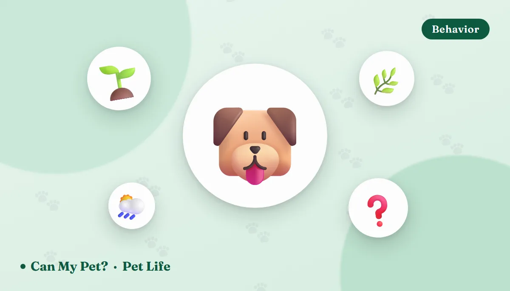

Why Do Dogs Eat Grass?

You're halfway through your coffee when you glance out the window and your dog is grazing the lawn like a tiny cow. It's one of the most common — and most Googled — dog behaviors out there, and the honest answer is that vets still don't have one single explanation. Here's what the research and leading veterinary sources actually say, why it's usually nothing to worry about, and the specific situations where it's worth a call to your vet.
7 real reasons dogs eat grass
Researchers and vets have floated several explanations over the years. None of them fully explains every dog, and it's likely a combination — but these are the leading theories:
1. It's leftover instinct Ancestral
Wild canine ancestors ate whole prey, including the grass-filled stomach contents of grazing animals, and would also eat vegetation directly. Some behaviorists think modern dogs retain a bit of that instinct even though they no longer need it for nutrition.
2. Fiber and roughage Diet
Grass adds fiber and bulk that some dogs seem to actively seek out, especially on lower-fiber diets. It's a plausible, low-drama explanation for dogs who nibble steadily rather than gulp.
3. They just like the taste and texture Behavior
Fresh grass, especially after rain or in spring, has a texture and slightly sweet, green taste plenty of dogs seem to genuinely enjoy — the same way some dogs prefer certain treats over others.
4. Boredom or a way to pass the time Enrichment gap
Dogs left alone in a yard with nothing else to do will often graze simply because it's something to do with their mouth. If your dog grazes mostly during unsupervised yard time, boredom is a strong candidate — see our fun games to play with your dog guide for ways to give that energy somewhere else to go.
5. Mild nausea — but probably not the way you think Sometimes
This is the most popular myth: that dogs eat grass to make themselves vomit when they feel sick. A well-known study out of Kansas State University found that only about 1 in 10 dogs observed showed signs of illness before eating grass, and fewer than 1 in 4 vomited afterward. So while a genuinely queasy dog might graze and then vomit, it's the exception, not the rule.
6. Pica or a compulsive habit Watch closely
In a small number of dogs, grass-eating crosses over into pica — a compulsion to eat non-food items, sometimes linked to anxiety, a nutrient gap, or an underlying medical issue. This is the version worth mentioning to your vet, especially if it's frantic, constant, or new.
7. Mild GI upset from something else entirely Correlation
Sometimes a dog with an already-upset stomach (from getting into the trash, a new food, or a minor bug) grazes more than usual simply because they're not feeling their best — the grass isn't causing or curing anything, it's just part of an off day.
So is it normal, or should I be concerned?
For the vast majority of dogs, occasional grass-nibbling on a clean, untreated lawn is considered normal behavior — not a symptom of anything. Veterinary sources including the ASPCA and general veterinary behavior guidance treat it as a benign habit worth monitoring rather than stopping outright, as long as the grass itself is safe.
When grass-eating is a red flag
The behavior itself is rarely the problem — the context around it is what matters. Contact your vet if you notice:
- Frequent vomiting paired with grass-eating, especially if it's becoming a daily pattern.
- Sudden, frantic, or obsessive grazing that looks different from your dog's normal, casual nibbling.
- Diarrhea, lethargy, or appetite changes alongside the grass-eating — these point to something else going on.
- Large amounts swallowed quickly, or eating mulch, sticks, or unfamiliar plants along with the grass — this raises the risk of a gastrointestinal blockage, which is an emergency.
- Access to treated lawns — if your dog grazed somewhere that may have been sprayed with pesticides, herbicides, or fertilizer, treat it as a possible poisoning risk and call a poison line right away.
What to do about it
For most dogs grazing on a safe lawn, you don't need to do anything at all. A few simple steps cover the rest:
- Keep your own yard free of pesticides, herbicides, and fertilizer, or fence off treated areas until they're safe again.
- Learn which common plants in your yard and neighborhood are toxic to dogs, and steer walks away from them.
- If boredom seems to be the driver, add more physical and mental enrichment — see fun games to play with your dog or a DIY puzzle toy for low-key days.
- If grazing suddenly changes in frequency or intensity, or comes with other symptoms, book a vet visit rather than guessing — it's the fastest way to rule out pica, a diet gap, or a GI issue.
Frequently asked questions
Is it normal for dogs to eat grass?
Yes. Surveys of dog owners find the large majority of dogs nibble grass at some point, and most show no signs of illness before or after doing it. Occasional grass-eating on an untreated lawn is considered normal behavior.
Does eating grass mean my dog has an upset stomach?
Probably not. Research on the subject found only a small minority of dogs seemed ill before eating grass, and most don't vomit afterward. It's more likely instinct, taste, fiber-seeking, or boredom than a deliberate attempt to self-treat nausea.
Should I stop my dog from eating grass?
You don't need to stop occasional nibbling on an untreated, pesticide-free lawn. Do redirect your dog away from grass that's been chemically treated, near roads, or mixed with unknown plants, since those carry real risk.
When should I worry about my dog eating grass?
Call your vet if grass-eating suddenly becomes frequent or frantic, is paired with repeated vomiting, diarrhea, lethargy or appetite changes, or if your dog swallows large amounts of grass, mulch, or an unknown plant. Any of those can signal an underlying issue or a blockage risk. Our grass food-safety page covers the pesticide and portion side in more detail.
By the CanMyPet Editorial Team · Reviewed against ASPCA and veterinary behavior guidance · Published August 2026.